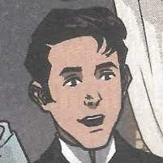
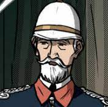

Characters of Noli Me Tangere
| Character | Description |
|---|---|
|  | The protagonist of the book is Juan Crisostomo Ibarra, also known as Ibarra. After finishing his studies in Europe, he returns to the Philippines with high hopes for making a difference in his hometown. However, he encounters many difficulties and injustices, which causes him to change from a youthful idealist to a revolutionary figure. |
| During the Spanish colonial era, Maria Clara is presented as a representation of innocence, purity, and the idealized Filipina lady. Juan Crisostomo Ibarra, the protagonist, is in love with her. She represents the impact of the Spanish friars on Filipino culture because she was raised in a convent. Her persona serves to illustrate the limitations imposed on women by the patriarchal culture of the day. Maria Clara's life is plagued by secrets and tragedy in spite of its outward appearance of perfection, representing the unseen sorrow that existed throughout colonial society. | |
|  | Juan Crisostomo Ibarra, the main character of the book, is descended from Don Rafael Ibarra. He is a well-off Filipino who went to school in Europe and returned with cutting-edge ideas. His persona stands in for the country's aspirations for constructive transformation and development. A significant portion of the novel's conflict is set in motion by his awful destiny. |
Additional Information
Juan Crisostomo Ibarra
The protagonist of the book is Juan Crisostomo Ibarra. He is a rich and intelligent Filipino who has just returned from Europe. Ibarra represents development and optimism in a country still suffering from Spanish colonization since he is motivated by a desire for justice and reform in his own San Diego. His persona reflects the fight for progress and the aspiration of the Filipino people for a brighter future.
Don Rafeal Ibarra
Juan Crisostomo Ibarra's father is Don Rafael Ibarra. He is a well-liked and wealthy guy who is renowned for his generosity and friendliness to the residents of San Diego. The sad end of Don Rafael early in the narrative sets the stage for the subsequent events and emphasizes the injustices and mistreatment of the Filipino populace during the period of Spanish rule.
Maria Clara de los Santos
The protagonist of the story and Juan Crisostomo Ibarra's love interest is Maria Clara de los Santos. She is recognized for her beauty and elegance and is the Captain Tiago's daughter. The character of Maria Clara is essential to the plot's examination of love, identity, and the effects of colonial tyranny since she represents the idealized qualities of modesty and purity in the eyes of society.